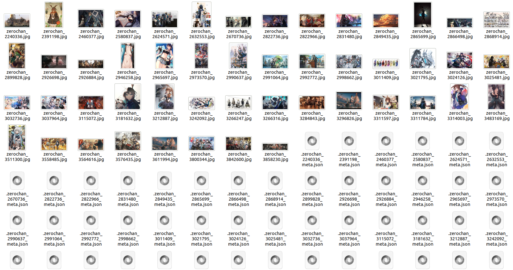
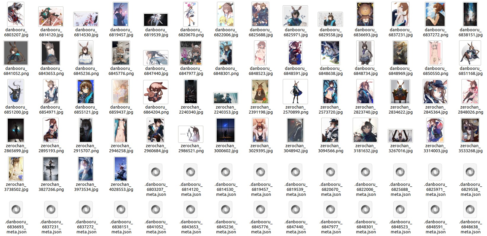
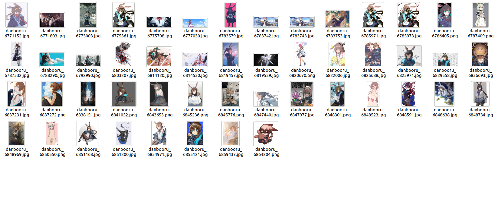

Crawling Some Images From Websites
(Chinese Doc：https://deepghs.github.io/waifuc/main/tutorials-CN/crawl_images/index.html )
How to Crawl Data From Websites?
In fact, waifuc can crawl from many websites, not just Danbooru. But before we get started, allow me to formally introduce my another waifu, Amiya, a cute bunny girl. (You may ask why I have so many waifus. Well, as you know, anime lovers have an infinite number of waifus; they are all my honey and angels 😍)
Zerochan
Zerochan is a website with many high-quality images. We can crawl from it in a straightforward way. Considering we only need 50 images due to the large quantity, the following code achieves this:
1from waifuc.export import SaveExporter
2from waifuc.source import ZerochanSource
3
4if __name__ == '__main__':
5 s = ZerochanSource('Amiya')
6 # the 50 means only need first 50 images
7 # if you need to get all images from zerochan,
8 # just replace it with 's.export('
9 s[:50].export(
10 SaveExporter('/data/amiya_zerochan')
11 )
Please note that we use SaveExporter here instead of the previous TextureInversionExporter. Its function will be explained in the following sections. The data crawled here will be stored locally in the /data/amiya_zerochan directory, as shown below:

However, we’ve noticed an issue—Zerochan has many member-only images, requiring login to access. To address this, we can use our username and password for authentication to obtain more and higher-quality images:
1from waifuc.export import SaveExporter
2from waifuc.source import ZerochanSource
3
4if __name__ == '__main__':
5 s = ZerochanSource(
6 'Amiya',
7 username='your_username',
8 password='your_password',
9 )
10 s[:50].export(
11 SaveExporter('/data/amiya_zerochan')
12 )
Indeed, we successfully obtained many member-only images, as shown below:
However, many of these images have relatively low resolutions, with few exceeding 1000 pixels in either dimension. This is because Zerochan defaults to using the large size to speed up downloads. If you need larger images, you can modify the size selection like this:
1from waifuc.export import SaveExporter
2from waifuc.source import ZerochanSource
3
4if __name__ == '__main__':
5 s = ZerochanSource(
6 'Amiya',
7 username='your_username',
8 password='your_password',
9 select='full',
10 )
11 s[:50].export(
12 SaveExporter('/data/amiya_zerochan')
13 )
After crawling, all the images will be in full size.
However, there’s still an issue—many high-quality images are official promotional art, and since Amiya is a main character, she often appears in group art. We actually need images that only feature her. No problem, just set the search mode to strict:
1from waifuc.export import SaveExporter
2from waifuc.source import ZerochanSource
3
4if __name__ == '__main__':
5 s = ZerochanSource(
6 'Amiya',
7 username='your_username',
8 password='your_password',
9 select='full',
10 strict=True,
11 )
12 s[:50].export(
13 SaveExporter('/data/amiya_zerochan')
14 )
Now we have high-quality images of Amiya alone from Zerochan, as shown below:

Danbooru
Clearly, Danbooru can also be crawled easily:
1from waifuc.export import SaveExporter
2from waifuc.source import DanbooruSource
3
4if __name__ == '__main__':
5 s = DanbooruSource(['amiya_(arknights)'])
6 s[:50].export(
7 SaveExporter('/data/amiya_danbooru')
8 )
Moreover, on Danbooru and many similar sites, you can directly collect solo images by adding the solo tag, like this:
1from waifuc.export import SaveExporter
2from waifuc.source import DanbooruSource
3
4if __name__ == '__main__':
5 s = DanbooruSource(['amiya_(arknights)', 'solo'])
6 s[:50].export(
7 SaveExporter('/data/amiya_solo_danbooru')
8 )
Pixiv
waifuc also supports crawling for Pixiv, including keyword searches, artist-specific crawls, and crawls based on rankings.
We can use PixivSearchSource to crawl images based on keywords, as shown below:
1from waifuc.export import SaveExporter
2from waifuc.source import PixivSearchSource
3
4if __name__ == '__main__':
5 s = PixivSearchSource(
6
7 'アークナイツ (amiya OR アーミヤ OR 阿米娅)',
8 refresh_token='your_pixiv_refresh_token',
9 )
10 s[:50].export(
11 SaveExporter('/data/amiya_pixiv')
12 )
We can also use PixivUserSource to crawl images from a specific artist, as shown below:
1from waifuc.export import SaveExporter
2from waifuc.source import PixivUserSource
3
4if __name__ == '__main__':
5 s = PixivUserSource(
6 2864095, # pixiv user 2864095
7 refresh_token='your_pixiv_refresh_token',
8 )
9 s[:50].export(
10 SaveExporter('/data/pixiv_user_misaka_12003')
11 )
We can use PixivRankingSource to crawl images from the ranking, as shown below:
1from waifuc.export import SaveExporter
2from waifuc.source import PixivRankingSource
3
4if __name__ == '__main__':
5 s = PixivRankingSource(
6 mode='day', # daily ranklist
7 refresh_token='your_pixiv_refresh_token',
8 )
9 s[:50].export(
10 SaveExporter('/data/pixiv_daily_best')
11 )
Anime-Pictures
Anime-Pictures is a site with fewer images, but generally high quality. waifuc also supports crawling from it, as shown below:
1from waifuc.export import SaveExporter
2from waifuc.source import AnimePicturesSource
3
4if __name__ == '__main__':
5 s = AnimePicturesSource(['amiya (arknights)'])
6 s[:50].export(
7 SaveExporter('/data/amiya_animepictures')
8 )
Sankaku
Sankaku is a site with a large number of images of various types, and waifuc also supports it, as shown below:
1from waifuc.export import SaveExporter
2from waifuc.source import SankakuSource
3
4if __name__ == '__main__':
5 s = SankakuSource(
6 ['amiya_(arknights)'],
7 username='your_username',
8 password='your_password',
9 )
10 s[:50].export(
11 SaveExporter('/data/amiya_sankaku')
12 )
Gelbooru
waifuc also supports crawling from Gelbooru, as shown below:
1from waifuc.export import SaveExporter
2from waifuc.source import GelbooruSource
3
4if __name__ == '__main__':
5 s = GelbooruSource(['amiya_(arknights)'])
6 s[:50].export(
7 SaveExporter('/data/amiya_gelbooru')
8 )
Duitang
In response to a request from a mysterious user on civitai, waifuc has added support for Duitang. Duitang is a Chinese website that contains many high-quality anime images. The crawling code is as follows:
1from waifuc.export import SaveExporter
2from waifuc.source import DuitangSource
3
4if __name__ == '__main__':
5 s = DuitangSource('阿米娅')
6 s[:50].export(
7 SaveExporter('/data/amiya_duitang')
8 )
Other Supported Sites
In addition to the above-mentioned websites, we also support a large number of other image websites. All supported websites are listed below:
ATFBooruSource (Website: https://booru.allthefallen.moe)
AnimePicturesSource (Website: https://anime-pictures.net)
DanbooruSource (Website: https://danbooru.donmai.us)
DerpibooruSource (Website: https://derpibooru.org)
DuitangSource (Website: https://www.duitang.com)
E621Source (Website: https://e621.net)
E926Source (Website: https://e926.net)
FurbooruSource (Website: https://furbooru.com)
GelbooruSource (Website: https://gelbooru.com)
Huashi6Source (Website: https://www.huashi6.com)
HypnoHubSource (Website: https://hypnohub.net)
KonachanNetSource (Website: https://konachan.net)
KonachanSource (Website: https://konachan.com)
LolibooruSource (Website: https://lolibooru.moe)
PahealSource (Website: https://rule34.paheal.net)
PixivRankingSource (Website: https://pixiv.net)
PixivSearchSource (Website: https://pixiv.net)
PixivUserSource (Website: https://pixiv.net)
Rule34Source (Website: https://rule34.xxx)
SafebooruOrgSource (Website: https://safebooru.org)
SafebooruSource (Website: https://safebooru.donmai.us)
SankakuSource (Website: https://chan.sankakucomplex.com)
TBIBSource (Website: https://tbib.org)
WallHavenSource (Website: https://wallhaven.cc)
XbooruSource (Website: https://xbooru.com)
YandeSource (Website: https://yande.re)
ZerochanSource (Website: https://www.zerochan.net)
For more information and details on using these data sources, refer to the official waifuc source code.
Crawling Data from Multiple Websites
In reality, there are often cases where we want to retrieve image data from multiple websites. For example, we might need 30 images from Danbooru and another 30 from Zerochan.
To address this situation, waifuc provides concatenation and union operations for data sources. In simple terms, you can integrate multiple data sources using concatenation (+) and union (|). For example, to fulfill the mentioned requirement, we can concatenate the data sources of Danbooru and Zerochan, creating a new data source, as shown below:
1from waifuc.export import SaveExporter
2from waifuc.source import DanbooruSource, ZerochanSource
3
4if __name__ == '__main__':
5 # First 30 images from Danbooru
6 s_db = DanbooruSource(
7 ['amiya_(arknights)', 'solo'],
8 min_size=10000,
9 )[:30]
10
11 # First 30 images from Zerochan
12 s_zerochan = ZerochanSource(
13 'Amiya',
14 username='your_username',
15 password='your_password',
16 select='full',
17 strict=True,
18 )[:30]
19
20 # Concatenate these 2 data sources
21 s = s_db + s_zerochan
22 s.export(
23 SaveExporter('/data/amiya_2datasources')
24 )
The code above first crawls 30 images from Danbooru and then another 30 from Zerochan. Consequently, we get a dataset like this:

Moreover, in some cases, we might not know in advance the number of images each data source contains. Instead, we may want to collect images from different sources as much as possible, with a specific total quantity in mind. In such cases, we can use the union operation, as shown below:
1from waifuc.export import SaveExporter
2from waifuc.source import DanbooruSource, ZerochanSource
3
4if __name__ == '__main__':
5 # Images from Danbooru
6 s_db = DanbooruSource(
7 ['amiya_(arknights)', 'solo'],
8 min_size=10000,
9 )
10
11 # Images from Zerochan
12 s_zerochan = ZerochanSource(
13 'Amiya',
14 username='your_username',
15 password='your_password',
16 select='full',
17 strict=True,
18 )
19
20 # We need 60 images from these 2 sites
21 s = (s_db | s_zerochan)[:60]
22 s.export(
23 SaveExporter('/data/amiya_zerochan')
24 )
In this example, it randomly crawls one image at a time from either of the two websites until it collects 60 images. Thus, the final dataset is not fixed, and the following dataset is just an example:
In fact, all waifuc data sources support such concatenation and union operations. You can even perform complex nested operations to construct a sophisticated data source:
1from waifuc.export import SaveExporter
2from waifuc.source import DanbooruSource, ZerochanSource, PixivSearchSource
3
4if __name__ == '__main__':
5 # Images from Danbooru
6 s_db = DanbooruSource(
7 ['amiya_(arknights)', 'solo'],
8 min_size=10000,
9 )
10
11 # Images from Zerochan
12 s_zerochan = ZerochanSource(
13 'Amiya',
14 username='your_username',
15 password='your_password',
16 select='full',
17 strict=True,
18 )
19
20 # Images from Pixiv
21 s_pixiv = PixivSearchSource(
22 'アークナイツ (amiya OR アーミヤ OR 阿米娅)',
23 refresh_token='your_pixiv_refresh_token',
24 )
25
26 # We need 60 images from these 2 sites
27 s = s_zerochan[:50] + (s_db | s_pixiv)[:50]
28 s.export(
29 SaveExporter('/data/amiya_zerochan')
30 )
Here, a complex data source s = s_zerochan[:50] + (s_db | s_pixiv)[:50] is created, which effectively means:
First, crawl 50 images from Zerochan.
Then, randomly crawl a total of 50 images from Danbooru and Pixiv.
This results in obtaining a maximum of 100 images.
Moreover, concatenation and union operations can be performed after the attach syntax, meaning that you can preprocess the data source and then concatenate or union it. For example, in the following example:
1from waifuc.action import BackgroundRemovalAction, FileExtAction
2from waifuc.export import SaveExporter
3from waifuc.source import DanbooruSource, ZerochanSource
4
5if __name__ == '__main__':
6 # Images from Danbooru
7 s_db = DanbooruSource(
8 ['amiya_(arknights)', 'solo'],
9 min_size=10000,
10 )
11
12 # Images from Zerochan
13 s_zerochan = ZerochanSource(
14 'Amiya',
15 username='your_username',
16 password='your_password',
17 select='full',
18 strict=True,
19 )
20 # Remove background for Zerochan images
21 s_zerochan = s_zerochan.attach(
22 BackgroundRemovalAction()
23 )
24
25 # We need 60 images from these 2 sites
26 s = (s_zerochan | s_db)[:60]
27 s.attach(
28 FileExtAction('.png'), # Use PNG format to save
29 ).export(
30 SaveExporter('/data/amiya_zerochan')
31 )
The above code crawls images from both Zerochan and Danbooru, removes the background for images from Zerochan, and saves a total of 60 images. The results you get might look similar to the following, where images from Zerochan have their backgrounds removed:

Concatenation and union are essential features of waifuc data sources, and using them wisely makes the configuration of data sources very flexible and versatile.
Why Are There So Many JSON Files?
If you’ve read up to this point, you may have noticed something — all the datasets saved using SaveExporter have a corresponding JSON file with the same name as each image. You must be curious about the purpose of these JSON files, and this section will provide an explanation.
Firstly, let’s open the file .danbooru_6814120_meta.json and take a look at its content. The JSON data looks something like this:
In essence, this is a data file used to store metadata about the images. In this metadata file, it contains the following information:
Information about the image from the Danbooru website, including tags, dimensions, ID, upload time, etc.
URL information about the image, i.e., where the image was downloaded from.
Naming information for the image, i.e., what filename the image will be saved as.
Tag information for the image, i.e., what tags will be included when generating a training dataset.
These pieces of information play their respective roles in various processing steps. For example, tag information requires crawling from the website or using a tagger for labeling, and this information will be written during the generation of the LoRA training dataset. Therefore, in waifuc, they are maintained and can be saved using SaveExporter.
To make the most of this information, you can reload the dataset saved to your local machine using `LocalSource`. You can achieve this using the following code:
1from waifuc.export import TextualInversionExporter
2from waifuc.source import LocalSource
3
4if __name__ == '__main__':
5 # Images from your disk
6 s = LocalSource('/data/amiya_zerochan')
7 s.export(
8 TextualInversionExporter('/data/amiya_zerochan_save')
9 )
The code above reloads the dataset containing metadata that was previously saved and re-saves it in the format of the LoRA training dataset. The resulting files will look like the following:

Of course, it’s worth noting that LocalSource can be used not only for paths containing metadata files but also for paths containing only images. However, it will not include the initial metadata in the pipeline, meaning that information such as tags will need to be regenerated.
Additionally, like other data sources, `LocalSource` also supports concatenation and union operations. Leveraging this feature, you can use data from both the internet and local sources to build a dataset.
When you are sure that you only need images and don’t need any metadata for the next loading, you can use the no_meta parameter of SaveExporter to achieve this:
1from waifuc.export import SaveExporter
2from waifuc.source import DanbooruSource
3
4if __name__ == '__main__':
5 s = DanbooruSource(
6 ['amiya_(arknights)', 'solo'],
7 min_size=10000,
8 )[:50]
9 s.export(
10 SaveExporter('/data/amiya_danbooru_nometa', no_meta=True)
11 )
This code will not save any metadata files, and you will precisely get 50 images, as shown below:
I Don’t Want to Save Images to Disk, How Can I Use Them Directly?
In another scenario, you might not want to save image files to the hard disk but rather use them directly in memory to save time. waifuc also supports this usage, as shown below:
1from waifuc.source import DanbooruSource
2
3if __name__ == '__main__':
4 s = DanbooruSource(
5 ['amiya_(arknights)', 'solo'],
6 min_size=10000,
7 )[:50]
8 for item in s:
9 print(item)
Yes, data sources (including those that have used the attach method) can be iterated over. The type of each item is defined as follows:
1from dataclasses import dataclass
2
3from PIL import Image
4
5
6@dataclass
7class ImageItem:
8 image: Image.Image
9 meta: dict
As you can see, the structure of each item is straightforward, containing an image object of type PIL.Image and a meta item for storing metadata.
Once you have the item, you can customize the operations you need using its image object and metadata.